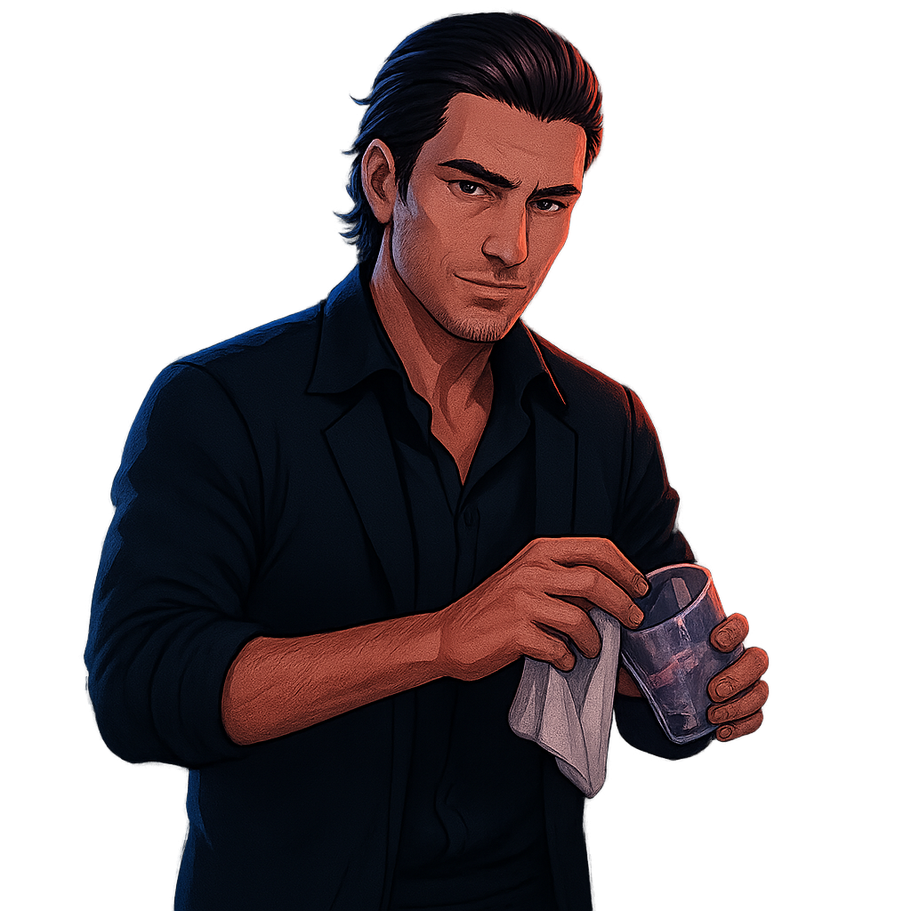

Dorian — Barman
Clique no barman.
Clique no barman ou escolha uma opção abaixo. Dorian limpa o copo enquanto observa a cidade de neon pela janela.
Falar
Começar conversa
Observar
Olhar suas ações
Pedir bebida
Pedir uma bebida especial
Ação secreta
Tentar algo incomum